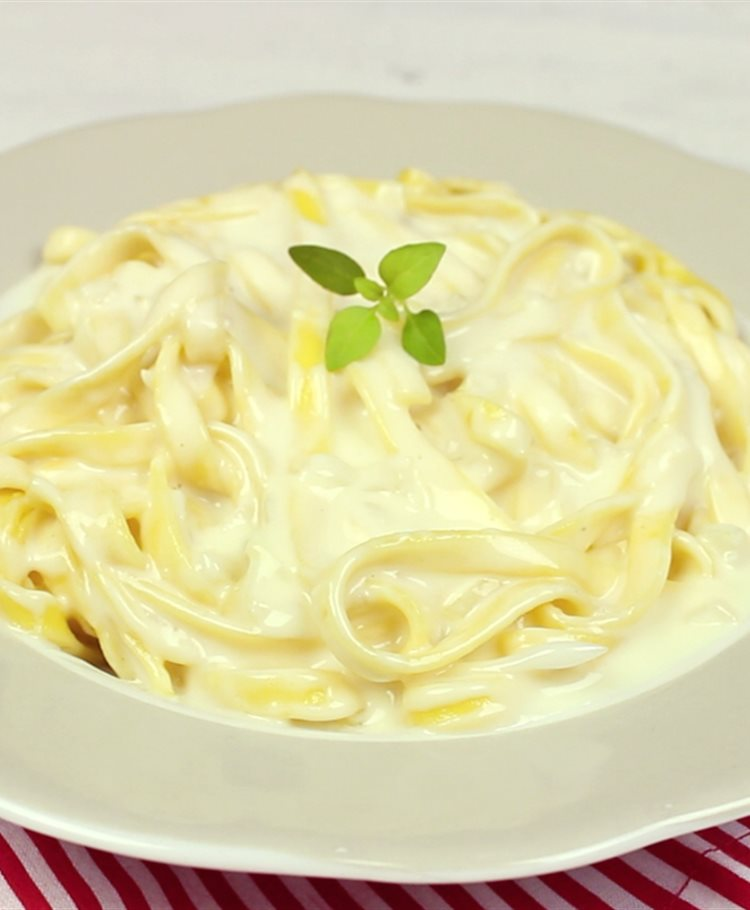
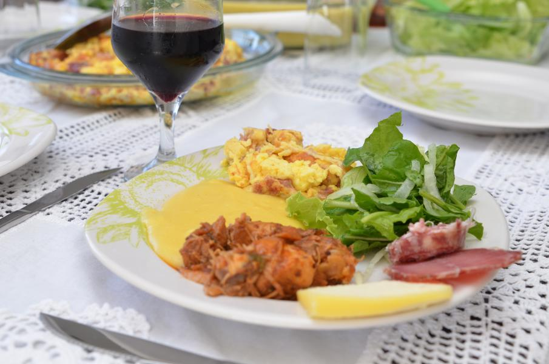
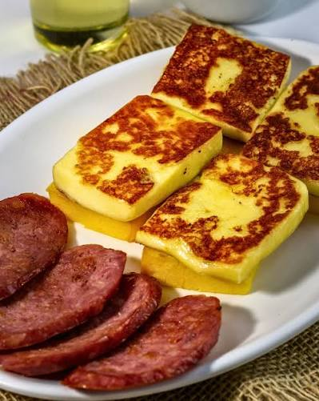
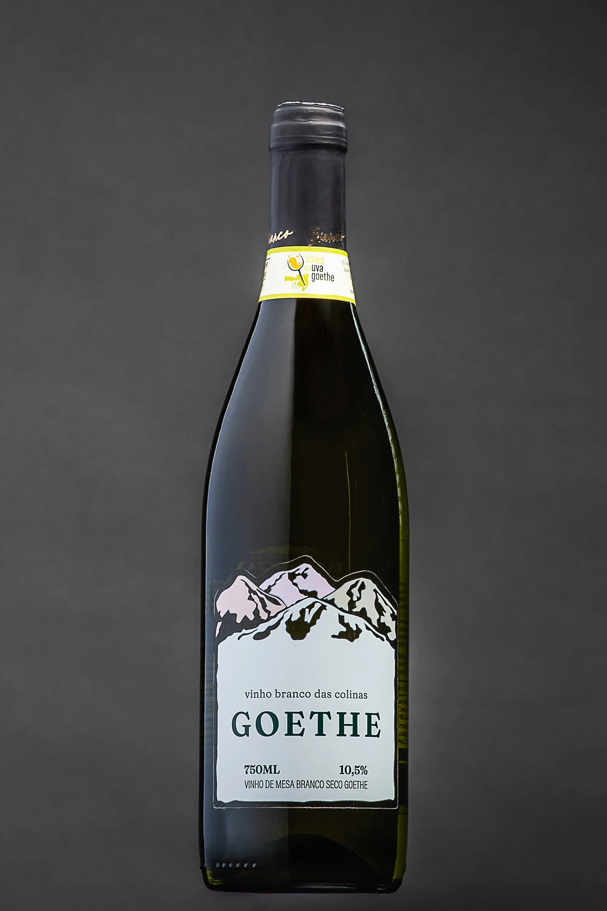

Cardápio
Fettuccine ao molho branco
Massa fresca ao molho de creme de leite com parmesão ralado na hora e toque de noz-moscada.

R$ 42,00
Pizza margherita
Pizza no forno a lenha com molho de tomate artesanal, mussarela fresca e folhas de manjericão.

R$ 55,00
Polenta com fortaia
Polenta cremosa servida com fortaia — omelete de ovos caipiras — prato típico da cozinha ítalo-gauchesca.

R$ 35,00
Salame e queijo colonial
Salame artesanal fatiado acompanhado de queijo colonial da região, servido com pão caseiro.

R$ 38,00
Vinho Goethe (taça)
Vinho branco da uva Goethe, cultivada em Urussanga/SC. Aroma floral, sabor suave e levemente ácido.

R$ 25,00